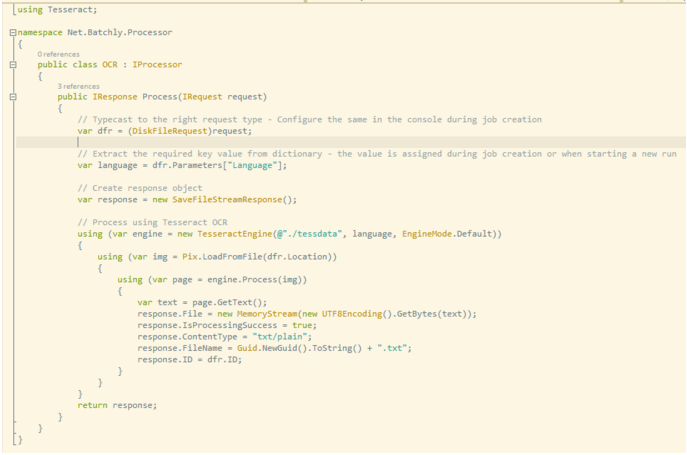

This section provides the necessary information for processing files using an OCR like Tesseract.
Data Source
Batchly currently supports maintaining Image files in S3. You can specify a bucket and a folder as data source. Batchly enumerates the entire folder to get the list of files and begins processing.
Interface Model
Tesseract has a nugget package for use within .Net systems which makes it extremely easy to build processors for Batchly. Here’s the steps for creating a new processor
-
Create a new class library project
-
Using Package Manager, add the tesseract nuget package
-
Add reference to the Net.Batchly.Extension dll
-
Create a new class and implement the IProcessor Interface
-
Write how a single file is processed within the Process method.
The following image shows a simple processor for Batchly written using the tesseract engine. 
Script Model
If you wish to create a script for processing, Batchly supports the following method. Create a script that accept a json file that contains all the input information, invoke a library like Tesseract and send back a json response post processing.